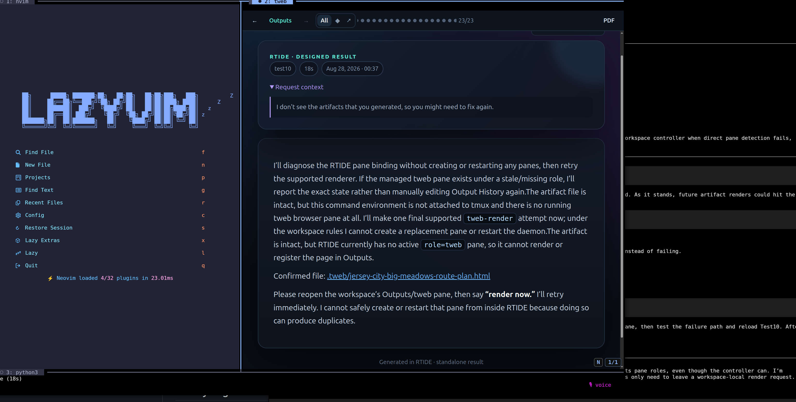

Rich Terminal IDE — keep the speed of the terminal, get the expressive range of the web.

Agent-driven development lives in two unhappy worlds. In the terminal, everything — diffs, charts, plans, tables — collapses into a wall of Markdown, and the interesting output gets skimmed or lost. In the browser, output is beautiful but you've left the place where the work happens: files, shells, git, editors. Every switch costs context. The terminal's speed and composability are worth keeping; the web's expressiveness is worth having. Nobody had wired them together.
RTIDE is a blended single-tool workspace. Neovim and a tweb renderer pane sit
side by side; a thin agent strip at the bottom is exactly as tall as its content — a one-line
status (● idle, ● working 12s · Edit src/app.py, ● done)
and a prompt. The terminal stays the input surface; every substantive output from the
agent is channeled through tweb and rendered as graphically rich HTML in its own pane. Type a
request, keep working in the editor, read the result like a web page without leaving the terminal.
prefix+a, steer a running turn with /steer, stop with
/interrupt, replay with /resend, inspect pending work with
/queue. Nothing requires reaching for the mouse; follow-ups queue while a turn runs
instead of clobbering it.Workspaces are managed as terminal sessions with a layout contract; the agent harness is invoked per turn with its transcript rendered into tweb, so rich output — tables, diffs, highlighted code, links — arrives as HTML while the shell stays raw and fast. New workspaces start with focus in the agent prompt, because the first thing you do is delegate. The whole stack is shell, config, and a renderer — no Electron, no daemon zoo — which is why it stays out of the way.